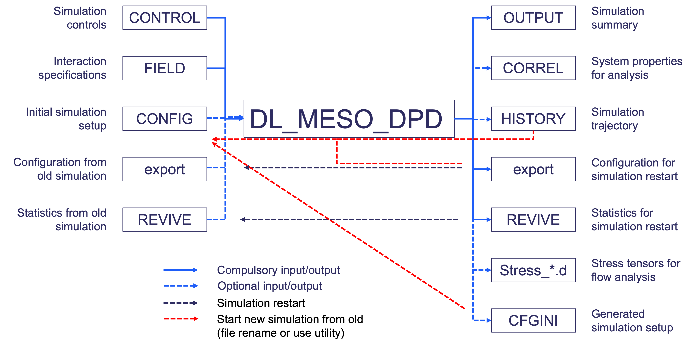
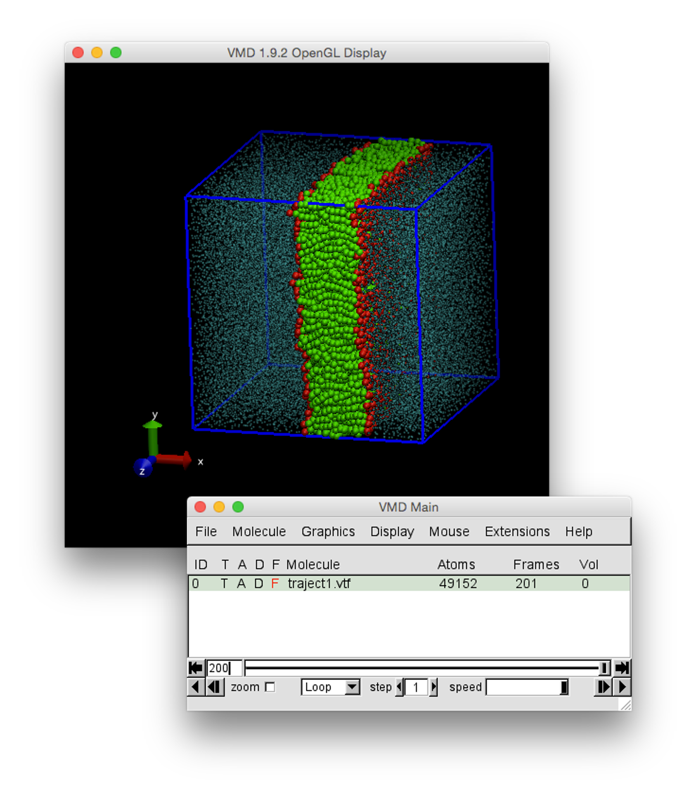
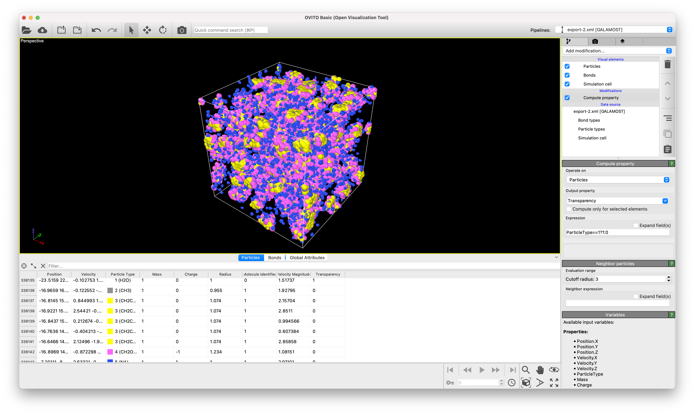

DL_MESO_DPD files¶
The DPD code in DL_MESO, DL_MESO_DPD, makes use of various input files to describe the simulation, including its initial state and interactions between particles, and creates output files indicating how the system has evolved over time. A summary description of the files, what they do and how they can be used are given in the diagram below.
{kind=link}
It should be noted that not all the input files shown here are required for a DL_MESO_DPD simulation run.
The internal units used by DL_MESO_DPD include:
Mass: mass of a selected particle type
Length: interaction cutoff distance for a selected pair of particle species
Energy: product of Boltzmann constant and temperature, \(k_B T\)
Charge: absolute charge on a proton or electron, \(|e|\)
where each of the above (apart from charge) are chosen for the specific simulation. The time unit can either be derived from the selected mass, length and energy units or obtained by matching up simulation and experimental self-diffusivities.
CONTROL
This file specifies the simulation properties, including the required system temperature, cutoff distances, timestep size, how long the simulation needs to run etc. It is formatted in a similar manner to the original (older) form of CONTROL files used by DL_POLY, although there are some different keywords available specifically for DPD calculations.
The first line of the CONTROL file is a description of the simulation. This is followed by lines consisting of keywords, most of which are followed with numerical values to define properties, as shown in the following example (an extract from a file for one of DL_MESO’s demonstration cases):
DL_MESO lipid bilayer example
volume 16384.0
temperature 1.0
cutoff 1.0
boundary halo 2.0
timestep 0.03
steps 100000
equilibration steps 0
scale temperature every 100
trajectory 0 2000
stats every 2000
stack size 100
print every 1000
job time 10800.0
close time 100.0
ensemble nvt mdvv
finish
Apart from the first line and the last line with finish (indicating the end of the CONTROL file), the order of keywords does not matter. The keywords that must be included are temperature and timestep, as both properties are essential for specifying a DPD simulation. The keyword volume is also required to specify the (initial) volume of the simulation box if this information is not supplied in a CONFIG file.
It should be noted that if a particular keyword is used more than once, the value from the last line with that keyword will be used. If any numbers for a given keyword are omitted, these are assumed to be zero.
A full list of the available keywords in CONTROL and the values they take can be found in Chapter 10 of The DL_MESO User Manual.
FIELD
This file specifies the contents of the simulation box and how particles interact with each other. This is formatted in a similar manner to DL_POLY FIELD files, albeit with some small differences to enable DL_MESO_DPD to setup calculations without needing an initial configuration.
After the first line providing a description of the simulation, the format of the FIELD file consists of blocks of information describing the particle species, molecule types, particle-particle interactions and external fields. The following example is a FIELD file for one of DL_MESO’s demonstration cases:
DL_MESO lipid bilayer example
SPECIES 3
H 1.0 0.0 0
C 1.0 0.0 0
W 1.0 0.0 35152
MOLECULES 1
HC6
nummols 2000
beads 7
H -0.0172847 0.383451 0.2849
C -0.016165 0.381111 -0.215093
C 0.280007 0.0703806 0.0412832
C 0.440339 -0.359403 -0.157664
C 0.00469362 -0.136529 -0.260333
C -0.455453 -0.119133 -0.0654933
C -0.236136 -0.219878 0.3724
bonds 6
harm 1 2 128.000 0.500000
harm 2 3 128.000 0.500000
harm 3 4 128.000 0.500000
harm 4 5 128.000 0.500000
harm 5 6 128.000 0.500000
harm 6 7 128.000 0.500000
angles 5
cos 1 2 3 20.0 0.0 1.0
cos 2 3 4 20.0 0.0 1.0
cos 3 4 5 20.0 0.0 1.0
cos 4 5 6 20.0 0.0 1.0
cos 5 6 7 20.0 0.0 1.0
finish
INTERACTIONS 6
H H dpd 25.0 1.0 4.5
C C dpd 25.0 1.0 4.5
W W dpd 25.0 1.0 4.5
H W dpd 35.0 1.0 4.5
H C dpd 50.0 1.0 9.0
C W dpd 75.0 1.0 20.0
close
Each block in the FIELD file starts with a keyword (species, molecules, interactions, surface, frozen, external) to specify what follows. Apart from external fields and frozen particle surfaces, this keyword is followed by the number of definitions to follow. The blocks do not have to be put in a specific order and those not required for a given simulation can be omitted, although species and interactions do have to exist to be able to define a valid DPD simulation, while a close directive must come at the end of the file. (External fields can only be defined one at a time, although multiple fields can be included in a FIELD file, while only a single definition for frozen particle walls would be required.)
For species, interactions and surface interactions, the number of definitions given the keyword line is equal to the number of lines that should immediate follow. The information for each particle species includes its name, mass, charge, population in solvent (i.e. not included in molecules) and (optionally) whether or not its particles are frozen in place. Non-molecular interactions are defined based on pairs of particle species and require the names of the species, the type of interaction and the various parameters. Surface interactions between particles and planar surfaces at the edges of the simulation box are based on particle species and each require the name of the species, the interaction type and the parameters.
Molecule definitions are set out in sub-blocks after the molecule keyword, where each keyword within the sub-block can be in any order, apart from the molecule’s name (the first line for a molecule’s definition) and the finish directive (the last line). These keywords include:
nummols: specifies the number of molecules of this type in the simulationbeads: specifies the number of particles per molecule; this is followed by a line for each particle with its species and relative coordinates for that bead when it is inserted into a system started without a CONFIG filebonds: specifies the number of bonds per molecule; this is followed by a line for each bond, giving the type of bond interaction, indices for the two particles bonded together and interaction parametersangles: specifies the number of bond angles per molecule; this is followed by a line for each angle, giving the type of angle interaction, indices for the three particles involved in the bond angle and interaction parametersdihedrals: specifies the number of bond dihedrals per molecule; this is followed by a line for each dihedral, giving the type of angle interaction, indices for the four particles involved in the bond dihedral and interaction parametersno isomer: indicates that the molecule structure cannot be reflected or similarly modified when it is inserted into a simulation box
and - like the main keywords in the FIELD file - any keyword not required for a molecule definition can be left out, although nummols and beads are the bare minimum required.
The keywords and definitions in the FIELD file are given in further detail in Chapter 10 of The DL_MESO User Manual. The file can be created by hand in a text editor, although the molecule.exe utility can be used to create simple definitions for chain-based molecules.
CONFIG
This file is used by DL_MESO_DPD to specify the initial conditions for a DPD simulation by providing the starting configuration: the positions of all particles in the simulation box are the minimum information required for this purpose. A short extract from an example CONFIG file is given here:
DL_MESO phase separation example
0 1
20.0000000000 0.0000000000 0.0000000000
0.0000000000 8.0000000000 0.0000000000
0.0000000000 0.0000000000 8.0000000000
A 1
-9.8333333333 -3.5000000000 -3.5000000000
A 2
-9.8333333333 -3.5000000000 -2.5000000000
A 3
-9.8333333333 -3.5000000000 -1.5000000000
A 4
-9.8333333333 -3.5000000000 -0.5000000000
A 5
-9.8333333333 -3.5000000000 0.5000000000
A 6
-9.8333333333 -3.5000000000 1.5000000000
It follows a similar format to CONFIG files required for DL_POLY, and indeed a CONFIG file generated by either program can be used without modification in the other. The first line gives the simulation name, while the second line gives a configuration key to indicate how much information is provided per particle and a boundary condition key. The next three lines indicate the simulation box size as unit vectors: only orthorhombic boxes can be used in DL_MESO_DPD with angles of 90 degrees between the vectors (i.e. zero values not in the main diagonal).
The data for the particles then follows as a series of multiple-line data blocks. Each block starts with a line with the particle species and its index, which is then followed by a number of lines that depends on the configuration key. The minimum data required are the particle positions, given as \(x\)-, \(y\)- and \(z\)-components with the box centre as the origin. If required, a particle’s velocity is included in the line immediately below its position and the force acting on the particle follows in the line after the velocity.
The CONFIG file is optional since DL_MESO_DPD can devise a suitable initial configuration based on the box size given in the CONTROL file and the contents specified in the FIELD file. DL_MESO_DPD can also devise an appropriate set of particle velocities for the required system temperature and determine the initial forces acting on the particles (based on defined interactions) if one or both properties are missing. That said, a CONFIG file can be useful to provide a non-default simulation setup, e.g. if an equilibrated state has already been simulated (with or without subsequent modification) or specific boundary conditions formed from frozen particles are required.
A CONFIG file can be created in a number of different ways:
The export_config.exe utility can convert the simulation restart state given in an export file
The history_config.exe utility can produce a CONFIG file from a selected trajectory frame in a HISTORY file, although the amount of data available per particle in this file limits the possible configuration key for the CONFIG file
The
l_initdirective in the CONTROL file can be used to generate a CFGINI file (in the same CONFIG format) based on an initial state devised by DL_MESO_DPD from the contents of the FIELD file.
export
This binary file is one created by DL_MESO_DPD at regular intervals to provide a simulation restart capability alongside the REVIVE file. It primarily consists of the positions, velocities and forces, species and molecule properties for all particles in the simulation at the time the file was created, which happens at regular intervals and overwrites the previous version of the file each time. These values can be directly read from the file into memory by DL_MESO_DPD when it is used to restart an interrupted simulation, extend a previously completed one or start a new simulation using the given particle data as the initial state.
The frequency of writing the export file can be specified in the CONTROL file with the keyword ndump, although a default of 1000 timesteps is used if this is not specified. Including the keyword restart in the CONTROL file will tell DL_MESO_DPD to use this file to restart or resume a previous simulation, which will only work if:
the specified particles (and molecules) match those in the FIELD file
the total number of timesteps specified in the CONTROL file is greater than the timestep number when the export file was created
a REVIVE file (see below) is also supplied
A new simulation based on the state given in the export file can be started by including restart noscale in the CONTROL file. The option restart scale will do the same but rescale the particle velocities to give the correct system temperature.
In all of the above restart or new simulation cases, no restriction is applied to the number of processor cores or threads used compared with the numbers originally used to create the export file.
The export file can be used to create a CONFIG file for a new simulation using the export_config.exe utility supplied with DL_MESO. The corresponding simulation state can also be visualised using the export_image_vtf.exe or export_image_xml.exe utility: these generate files of the simulation state in the export file that can be opened in VMD or OVITO respectively.
Further details about the formatting in this file - primarily for creation of new utilities or processing scripts - can be found in Chapter 11 of The DL_MESO Technical Manual.
REVIVE
This binary file is one created by DL_MESO_DPD at regular intervals to provide a simulation restart capability alongside the export file. It primarily consists of the accumulators for statistical properties and the random number generator states for the simulation at the time the the file was created, which happens at regular intervals and overwrites the previous version of the file each time. These values can be directly read from the file into memory by DL_MESO_DPD when it is used to restart an interrupted simulation or extend a previously completed one.
The frequency of writing the REVIVE file can be specified in the CONTROL file with the keyword ndump, although a default of 1000 timesteps is used if this is not specified. Including the keyword restart in the CONTROL file will tell DL_MESO_DPD to use this file to restart or resume a previous simulation, which will only work if:
the total number of timesteps specified in the CONTROL file is greater than the timestep number when the REVIVE file was created
a export file (see above) is also supplied
DL_MESO_DPD can still restart a simulation without a REVIVE file, although its progression will evidently differ due to effective resets in statistical accumulators and random number generator states. A warning message is printed if the restart option is given in the CONTROL file and no REVIVE file can be found.
The REVIVE file is not required if a new simulation is started using the particle data given in the export file as the starting state (i.e. if the restart noscale or restart scale options in the CONTROL file are used).
Further details about the formatting in this file - primarily for creation of new utilities or processing scripts - can be found in Chapter 11 of The DL_MESO Technical Manual.
OUTPUT
As DL_MESO_DPD runs, messages about the simulation are printed to a file called OUTPUT. This provides a summary of the information included in the supplied input files and how the calculation is carried out, summaries of the simulation state at regular intervals, and performance/timing data for the calculation. All warning messages and (wherever possible) all error messages due to problems arising from the contents of input files or running the simulation will also appear in this file: if the simulation cannot continue, these messages will be printed before DL_MESO_DPD terminates early.
The first messages include a header about DL_MESO_DPD, the simulation name as given in the CONTROL file, a table showing how the simulation volume is divided among available processor cores (if using the parallel version of DL_MESO_DPD), a summary of the simulation based on information provided in the input files - including the simulation controls, interaction types and parameters, molecule definitions - and a small sample of the starting configuration (given as selected particle positions and velocities).
At intervals specified by the print keyword in the CONTROL file, some basic information about the simulation is printed (as shown in the example below). This information includes the timestep number, the elapsed calculation time in seconds, different contributions to system energies given on a per-particle basis, and system-wide properties. The energy contributions and system-wide properties shown will depend on the simulation: in the example given below, the total (en-total), potential (pe-total), bond (be-total), angle (ae-total) and kinetic (ke-total) energies per particle are provided, along with the virial per particle (vir-total), the system pressure and temperature. At each timestep the first line of properties are instantaneous values, while the second line are rolling average (mean) values with the stack size given in the CONTROL file. If a non-zero number of equilibration time steps is specified in the CONTROL file, a message will be printed once the equilibration period is complete.
---------------------------------------------------------------------------------------------------------------------------
step en-total pe-total be-total ae-total vir-total ke-total pressure temperature
---------------------------------------------------------------------------------------------------------------------------
0 1.843173E+01 1.693173E+01 1.475151E-12 3.988697E+00 -4.350991E+01 1.500000E+00 4.650991E+01 1.000000E+00
0.486 1.843173E+01 1.693173E+01 1.475151E-12 3.988697E+00 -4.350991E+01 1.500000E+00 4.650991E+01 1.000000E+00
---------------------------------------------------------------------------------------------------------------------------
---------------------------------------------------------------------------------------------------------------------------
step en-total pe-total be-total ae-total vir-total ke-total pressure temperature
---------------------------------------------------------------------------------------------------------------------------
1 1.795883E+01 1.526278E+01 3.250282E-02 3.692347E+00 -3.927796E+01 2.696048E+00 4.467005E+01 1.797365E+00
0.491 1.795883E+01 1.526278E+01 3.250282E-02 3.692347E+00 -3.927796E+01 2.696048E+00 4.467005E+01 1.797365E+00
---------------------------------------------------------------------------------------------------------------------------
1000 6.799490E+00 5.251112E+00 1.630372E-01 2.262684E-01 -2.111752E+01 1.548377E+00 2.421427E+01 1.032252E+00
2.513 6.794768E+00 5.252810E+00 1.624034E-01 2.260572E-01 -2.113660E+01 1.541958E+00 2.422052E+01 1.027972E+00
---------------------------------------------------------------------------------------------------------------------------
2000 6.714229E+00 5.175292E+00 1.650159E-01 2.195325E-01 -2.065358E+01 1.538937E+00 2.373145E+01 1.025958E+00
4.603 6.711538E+00 5.178560E+00 1.661415E-01 2.216120E-01 -2.065512E+01 1.532978E+00 2.372107E+01 1.021985E+00
---------------------------------------------------------------------------------------------------------------------------
3000 6.672019E+00 5.140356E+00 1.660292E-01 2.180790E-01 -2.048833E+01 1.531663E+00 2.355166E+01 1.021109E+00
6.730 6.672461E+00 5.145441E+00 1.679449E-01 2.181387E-01 -2.050320E+01 1.527020E+00 2.355724E+01 1.018013E+00
---------------------------------------------------------------------------------------------------------------------------
4000 6.647134E+00 5.127629E+00 1.700051E-01 2.158534E-01 -2.043015E+01 1.519505E+00 2.346916E+01 1.013004E+00
8.901 6.653713E+00 5.129419E+00 1.676964E-01 2.153645E-01 -2.045447E+01 1.524294E+00 2.350305E+01 1.016196E+00
---------------------------------------------------------------------------------------------------------------------------
5000 6.636588E+00 5.108815E+00 1.662646E-01 2.100355E-01 -2.049284E+01 1.527773E+00 2.354839E+01 1.018516E+00
11.077 6.642604E+00 5.116271E+00 1.667179E-01 2.131899E-01 -2.040209E+01 1.526333E+00 2.345475E+01 1.017555E+00
---------------------------------------------------------------------------------------------------------------------------
Comparisons of the instantaneous and rolling average values for the energies and system properties can be used to determined whether or not the calculation is running as expected and/or correctly. For instance: convergence of the system temperature towards the required value after an initial increase when starting a new simulation indicates that the thermostat is working, while convergence to a minimum value for the total or potential energy per particle could indicate the system has reached an equilibrated state.
run terminating. elapsed cpu time = 216.17, job time = 10800.00, close time = 100.00
run closing at step 100000 final averages and fluctuations over 100000 steps
---------------------------------------------------------------------------------------------------------------------------
en-total pe-total be-total ae-total vir-total ke-total pressure temperature
---------------------------------------------------------------------------------------------------------------------------
6.605479E+00 5.078237E+00 1.656973E-01 2.094685E-01 -2.028567E+01 1.527242E+00 2.334016E+01 1.018161E+00
1.286383E-01 8.089180E-02 4.518290E-03 2.488018E-02 2.463192E-01 5.402246E-02 3.229288E-01 3.601498E-02
---------------------------------------------------------------------------------------------------------------------------
average conservative stress tensor r.m.s. fluctuations
2.015561E+01 -3.177801E-03 9.816188E-05 2.578080E-01 2.168299E-02 1.978672E-02
-3.177801E-03 2.029055E+01 9.043197E-04 2.168299E-02 2.298064E-01 2.070431E-02
9.816188E-05 9.043197E-04 2.015408E+01 1.978672E-02 2.070431E-02 2.607578E-01
average dissipative stress tensor r.m.s. fluctuations
9.111942E-02 -5.168451E-04 1.968687E-04 1.413148E-02 2.693630E-03 2.406450E-03
-5.168451E-04 7.340829E-02 -5.775670E-05 2.693630E-03 1.552292E-02 2.464551E-03
1.968687E-04 -5.775670E-05 9.204815E-02 2.406450E-03 2.464551E-03 1.394349E-02
average random stress tensor r.m.s. fluctuations
9.694394E-05 -8.585768E-06 1.405023E-04 4.022327E-02 2.332237E-02 2.308908E-02
-8.585768E-06 1.906339E-04 5.699095E-05 2.332237E-02 4.298364E-02 2.330101E-02
1.405023E-04 5.699095E-05 -8.565696E-05 2.308908E-02 2.330101E-02 3.989463E-02
average kinetic stress tensor r.m.s. fluctuations
3.054007E+00 1.776264E-04 -1.327895E-04 1.099596E-01 1.377117E-02 1.380853E-02
1.776264E-04 3.055238E+00 1.585085E-04 1.377117E-02 1.099112E-01 1.387899E-02
-1.327895E-04 1.585085E-04 3.054207E+00 1.380853E-02 1.387899E-02 1.077674E-01
average cpu time (forces) = 0.00188 (s)
average cpu time (cycle) = 0.00211 (s)
final no. buffer particles = 1076
final max. interactions/node = 48240
final particle positions and velocities
27901 W 1.877810E+00 2.740763E+00 3.693335E+00 -1.694262E-03 2.308751E-01 1.112247E+00
8787 W 3.058967E+00 3.461681E+00 2.397486E+00 5.476995E-01 -4.491639E-01 5.171220E-01
34979 W 7.507122E-01 3.029806E+00 2.500260E+00 -9.117529E-01 4.956548E-01 1.846703E+00
28828 W 2.339880E+00 1.424228E+00 3.357161E+00 -1.405042E+00 2.610840E-01 2.777143E-01
23858 W 3.123713E+00 4.295260E+00 3.017228E+00 9.352047E-01 -6.394347E-01 1.025458E+00
820 W 3.032478E+00 1.629804E+00 3.881884E+00 -2.970405E-01 -9.948861E-01 -8.971371E-01
4317 W 1.475079E+00 3.840465E+00 1.795127E+00 -2.586638E-01 1.283944E-01 8.278764E-01
30209 W 1.361708E+00 3.379164E+00 4.745614E+00 3.291630E-01 1.474140E+00 -7.335043E-01
2535 W 1.154912E+00 4.526340E+00 6.081265E+00 -7.281118E-01 -1.921010E-02 1.140039E+00
34447 W 2.921555E+00 4.060902E+00 1.442974E+00 1.717439E+00 -1.457277E-01 7.977746E-01
6863 W 2.329934E+00 9.813284E-01 1.774401E+00 1.066072E+00 -5.402653E-01 -1.149005E-01
75 W 3.761840E+00 2.926736E+00 5.400589E+00 -3.394836E-01 5.000335E-01 -1.078138E-01
7754 W 2.704264E+00 6.050787E+00 2.144034E+00 -6.140447E-01 -6.883937E-01 2.153911E+00
24425 W 6.826017E-01 4.881037E+00 2.264283E+00 -5.750579E-01 -6.281532E-01 5.283415E-01
33943 W 3.406952E+00 4.384923E-01 2.395721E+00 -8.690616E-01 -1.031212E-01 -1.021448E+00
26054 W 3.979125E+00 4.953755E+00 5.510950E+00 -1.051075E+00 -4.029992E-01 1.587104E+00
4068 W 4.012892E+00 2.619810E+00 1.070972E+00 9.630967E-01 2.109825E-01 4.637084E-02
27340 W 4.141643E+00 5.012433E+00 3.981179E+00 -4.788974E-02 1.171039E+00 3.000758E-01
29630 W 7.106467E-01 6.153948E+00 6.048169E+00 -1.234193E+00 -4.642485E-01 3.702198E-01
1929 W 3.473667E+00 3.339157E+00 6.164498E-02 -1.181672E+00 1.534140E-01 -2.384037E-01
12769 W 2.225088E+00 5.833752E+00 1.994152E-02 7.026843E-01 -1.647673E+00 1.304627E+00
time elapsed since job start = 216.21495104 seconds
************************************************************************
* Many thanks for using DL_MESO_DPD for your work. Please acknowledge *
* our efforts by including one of the following references when *
* publishing data obtained using DL_MESO_DPD: *
* *
* M. A. Seaton, R. L. Anderson, S. Metz and W. Smith, "DL_MESO: *
* highly scalable mesoscale simulations", Mol. Sim. 39 (10), 796-821 *
* (2013), doi:10.1080/08927022.2013.772297 *
* *
* M. A. Seaton, "The DL_MESO Mesoscale Simulation Package", STFC *
* Scientific Computing Department (2019), www.ccp5.ac.uk/DL_MESO *
************************************************************************
At the end of the calculation, DL_MESO_DPD prints the total elapsed calculation time in seconds (compared with the maximum times provided in the CONTROL file) and a summary of the properties calculated during the simulation. The energies and system-wide properties are summarised in a table with time-averaged values in the first line and standard deviations in the second, while small tables are provided for the mean and standard deviation pressure tensors separated out into conservative, dissipative, random and kinetic contributions (which can be used to assess rheological behaviour). A measure of the calculation efficiency - average times taken per timestep and per force calculation cycle - and a small sample of the final configuration are printed. The final message reminds the user to cite DL_MESO (either using its website or its article in Molecular Simulation) if the calculation results are published.
The contents of the OUTPUT file can be redirected to the screen or standard output by adding the l_scr directive to the CONTROL file. This option can be useful for troubleshooting a DPD simulation: while the majority of possible error messages normally appear in the OUTPUT file, some more detailed error messages may get printed directly to the screen or standard output.
CORREL
This optionally-produced output file gives instantaneous values of system properties calculated during the simulation at regular intervals starting from the end of equilibration. Its format consists of tabulated data in columns with values separated by spaces and a first line indicating the property in each column (as shown in the example below).
# time en-total pe-total be-total ae-total pressure p_xx p_xy p_xz p_yx p_yy p_yz p_zx p_zy p_zz temperature bndlen-av bndlen-max bndlen-min angle-av
0.000000E+00 1.843173E+01 1.693173E+01 1.475151E-12 3.988697E+00 4.650991E+01 4.599991E+01 3.359824E-02 -6.037229E-02 3.359824E-02 4.577098E+01 2.942863E-02 -6.037229E-02 2.942863E-02 4.775884E+01 1.000000E+00 5.000001E-01 5.000006E-01 4.999997E-01 9.175807E+01
6.000000E+01 6.714229E+00 5.175292E+00 1.650159E-01 2.195325E-01 2.373145E+01 2.377073E+01 3.702323E-02 3.588601E-02 3.702323E-02 2.373620E+01 1.663847E-02 3.588601E-02 1.663847E-02 2.368744E+01 1.025958E+00 5.548296E-01 9.158590E-01 2.592674E-01 1.632320E+02
1.200000E+02 6.647134E+00 5.127629E+00 1.700051E-01 2.158534E-01 2.346916E+01 2.344825E+01 3.662785E-02 -5.241391E-03 3.662785E-02 2.350132E+01 -3.236582E-02 -5.241391E-03 -3.236582E-02 2.345790E+01 1.013004E+00 5.582981E-01 8.653478E-01 2.463931E-01 1.633188E+02
1.800000E+02 6.634986E+00 5.109296E+00 1.675102E-01 2.129244E-01 2.339396E+01 2.346065E+01 3.492549E-02 -9.767868E-03 3.492549E-02 2.342363E+01 -4.434706E-02 -9.767868E-03 -4.434706E-02 2.329761E+01 1.017126E+00 5.580496E-01 9.074904E-01 2.652460E-01 1.634813E+02
2.400000E+02 6.649842E+00 5.111713E+00 1.642535E-01 2.163659E-01 2.342652E+01 2.343328E+01 -2.243221E-02 -1.898981E-02 -2.243221E-02 2.341083E+01 -1.850019E-02 -1.898981E-02 -1.850019E-02 2.343547E+01 1.025420E+00 5.567298E-01 8.627096E-01 2.373362E-01 1.633345E+02
3.000000E+02 6.629006E+00 5.098119E+00 1.640413E-01 2.088797E-01 2.344294E+01 2.343166E+01 -2.116295E-02 -1.931756E-02 -2.116295E-02 2.349595E+01 9.476013E-03 -1.931756E-02 9.476013E-03 2.340122E+01 1.020591E+00 5.558245E-01 8.759998E-01 2.003939E-01 1.635940E+02
The number of columns and the included properties will depend upon the simulation carried out by DL_MESO_DPD, but these will always include the time (given in DPD time units: product of timestep size and number of timesteps after equilibration), energies per particle, pressure, all nine components of the pressure tensor (with all contributions combined) and the system temperature. Properties that may be printed in the CORREL file but not in the OUTPUT file include the box dimensions when using a barostat, bond lengths (mean, maximum and minimum) and mean bond angles and dihedrals.
The stats keyword in the CONTROL file is used to specify the frequency of writing to the CORREL file. The CORREL file format with space-delimited data allows the file to be opened and used by a wide range of spreadsheet programs and graph plotting software.
HISTORY
This optionally-produced output file provides DPD simulation trajectories (a series of snapshots) that can be visualised or analysed after the calculation has completed. It comprises of a header containing information about the simulation that does not change - e.g. particle species, bond connectivity - and a series of frames with the positions of all particles in the simulation box (and optionally their velocities and forces) at a given point in time.
The HISTORY file generated by DL_MESO_DPD is created in a program-specific binary format. The selected file format enables DL_MESO_DPD to write to it as efficiently as possible, with parallel calculations using a small number of processor cores for file writing with MPI-IO and gathering of particle data among groups of cores. The trajectory keyword in the CONTROL file indicates from which timestep DL_MESO_DPD should start writing trajectory frames to the HISTORY file, how often frames should be written to the file and how much data per particle should be written (positions only, positions and velocities, or positions, velocities and forces).
Visualising or analysing a DL_MESO_DPD HISTORY file requires the use of utilities supplied with DL_MESO that can read this file, process the trajectory data and write the results to another file in a different format. The utilities that can work with HISTORY files are:
traject_vtf.exe: converts HISTORY file trajectory into a VTF-format file
traject_xml.exe: converts HISTORY file trajectory into GALAMOST XML-formatted files
local.exe: divides simulation box into cuboidal sections and calculates localised properties (densities, velocities etc.) in those sections
radius.exe: calculates end-to-end distances and radii of gyration for molecules in HISTORY file
dipole.exe: calculates dipole moments for charged molecules in HISTORY file
rdf.exe (rdfmol.exe): calculates radial distribution functions (RDFs) between pairs of particle species (molecule types) based on available HISTORY trajectories
isosurfaces.exe: calculates density maps for a user-specified species and an order parameter to identify mesophases for HISTORY trajectory frames
widom.exe: carries out Widom insertions (trial insertions) of a particle or molecule into HISTORY file trajectory frames to determine excess chemical potentials
history_config.exe: creates a CONFIG file for a subsequent simulation based on a selected trajectory frame in a HISTORY file
The results file produced by traject_vtf.exe can be opened in VMD to visualise the trajectory resulting from the DL_MESO_DPD simulation and carry out some analyses.
{kind=link}
Similarly, the result files from traject_xml.exe can be opened in OVITO, which can also visualise the trajectory and carry out analyses.
{kind=link}
The files produced by local.exe and isosurfaces.exe are in a VTK format, which can be opened in Paraview to visualise and analyse the results.
The other files generated by the utilities are text-based tabulated data formats, all of which can be opened using spreadsheet or graph plotting programs. Further details of these files and their corresponding utilities can be found in Appendix C of the The DL_MESO User Manual. Further details about the formatting in this file - primarily for creation of new utilities or processing scripts - can be found in Chapter 11 of The DL_MESO Technical Manual.
Stress_*.d
These optionally-produced four files (Stress_pot.d, Stress_diss.d, Stress_rn.d and Stress_kin.d) consist of instantaneous values of the pressure tensor divided into conservative (potential), dissipative, random and kinetic contributions respectively. Their file format is similar to that for the CORREL file and these files can be also opened using spreadsheet and graph-plotting software: they are intended for more detailed rheological analyses of DPD systems.
The stress keyword in CONTROL enables the user to indicate which files should be written, the starting timestep and the frequency of writing the pressure tensors to these files.